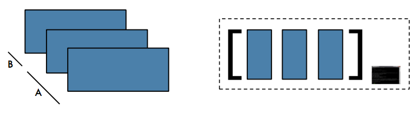
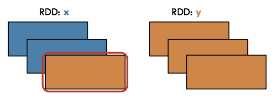
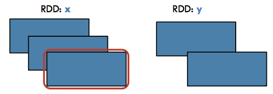
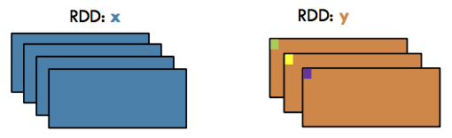
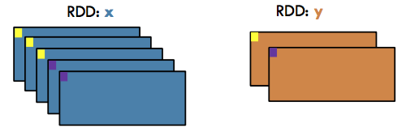
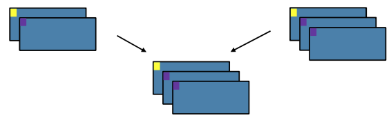
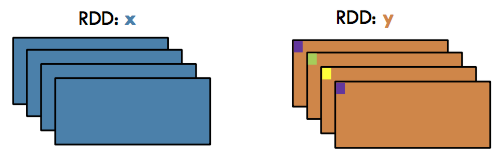
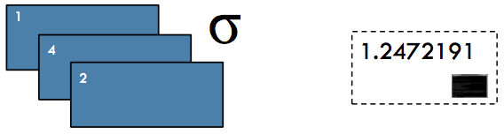

PySpark¶
Apache Spark was first released in 2014.
It was originally developed by Matei Zaharia as a class project, and later a PhD dissertation, at University of California, Berkeley.
Spark is written in Scala.
All images come from Databricks.
Apache Spark is a fast and general-purpose cluster computing system.
It provides high-level APIs in Java, Scala, Python and R, and an optimized engine that supports general execution graphs.
Spark can manage “big data” collections with a small set of high-level primitives like
map,filter,groupby, andjoin. With these common patterns we can often handle computations that are more complex than map, but are still structured.It also supports a rich set of higher-level tools including Spark SQL for SQL and structured data processing, MLlib for machine learning, GraphX for graph processing, and Spark Streaming.
Resilient distributed datasets¶
The fundamental abstraction of Apache Spark is a read-only, parallel, distributed, fault-tolerent collection called a resilient distributed datasets (RDD).
RDDs behave a bit like Python collections (e.g. lists).
When working with Apache Spark we iteratively apply functions to every item of these collections in parallel to produce new RDDs.
The data is distributed across nodes in a cluster of computers.
Functions implemented in Spark can work in parallel across elements of the collection.
The Spark framework allocates data and processing to different nodes, without any intervention from the programmer.
RDDs automatically rebuilt on machine failure.
Lifecycle of a Spark Program¶
Create some input RDDs from external data or parallelize a collection in your driver program.
Lazily transform them to define new RDDs using transformations like
filter()ormap()Ask Spark to cache() any intermediate RDDs that will need to be reused.
Launch actions such as count() and collect() to kick off a parallel computation, which is then optimized and executed by Spark.
Operations on Distributed Data¶
Two types of operations: transformations and actions
Transformations are lazy (not computed immediately)
Transformations are executed when an action is run
Transformations (lazy)¶
map() flatMap()
filter()
mapPartitions() mapPartitionsWithIndex()
sample()
union() intersection() distinct()
groupBy() groupByKey()
reduceBy() reduceByKey()
sortBy() sortByKey()
join()
cogroup()
cartesian()
pipe()
coalesce()
repartition()
partitionBy()
...
Actions¶
reduce()
collect()
count()
first()
take()
takeSample()
saveToCassandra()
takeOrdered()
saveAsTextFile()
saveAsSequenceFile()
saveAsObjectFile()
countByKey()
foreach()

The SparkContext class¶
When working with Apache Spark we invoke methods on an object which is an instance of the
pyspark.SparkContextcontext.Typically, an instance of this object will be created automatically for you and assigned to the variable
sc.The
parallelizemethod inSparkContextcan be used to turn any ordinary Python collection into an RDD;normally we would create an RDD from a large file or an HBase table.
First example¶
PySpark isn’t on sys.path by default, but that doesn’t mean it can’t be used as a regular library. You can address this by either symlinking pyspark into your site-packages, or adding pyspark to sys.path at runtime. findspark does the latter.
We have a spark context sc to use with a tiny local spark cluster with 4 nodes (will work just fine on a multicore machine).
If you use the workstation in room A111 run the code below before:
import findspark
import os
os.environ["JAVA_HOME"] = "/usr/lib/jvm/java-8-openjdk-amd64",
os.environ["SPARK_HOME"] = "/export/spark-2.3.1-bin-hadoop2.7"
findspark.init()
Create your first RDD¶
Exercise¶
Create a file sample.txtwith lorem package. Read and load it into a RDD with the textFile spark function.
Collect¶
Action / To Driver: Return all items in the RDD to the driver in a single list

Source: https://i.imgur.com/DUO6ygB.png
Exercise¶
Collect the text you read before from the sample.txtfile.
Map¶
Transformation / Narrow: Return a new RDD by applying a function to each element of this RDD

Source: http://i.imgur.com/PxNJf0U.png
Exercise¶
Replace the lambda function by a function that contains a pause (sleep(1)) and check if the map operation is parallelized.
Filter¶
Transformation / Narrow: Return a new RDD containing only the elements that satisfy a predicate
 Source: http://i.imgur.com/GFyji4U.png
FlatMap¶
Transformation / Narrow: Return a new RDD by first applying a function to all elements of this RDD, and then flattening the results

Exercise¶
Use FlatMap to clean the text from sample.txtfile. Lower, remove dots and split into words.
GroupBy¶
Transformation / Wide: Group the data in the original RDD. Create pairs where the key is the output of a user function, and the value is all items for which the function yields this key.

GroupByKey¶
Transformation / Wide: Group the values for each key in the original RDD. Create a new pair where the original key corresponds to this collected group of values.

Join¶
Transformation / Wide: Return a new RDD containing all pairs of elements having the same key in the original RDDs

Distinct¶
Transformation / Wide: Return a new RDD containing distinct items from the original RDD (omitting all duplicates)

KeyBy¶
Transformation / Narrow: Create a Pair RDD, forming one pair for each item in the original RDD. The pair’s key is calculated from the value via a user-supplied function.

Actions¶
Map-Reduce operation¶
Action / To Driver: Aggregate all the elements of the RDD by applying a user function pairwise to elements and partial results, and return a result to the driver

Max, Min, Sum, Mean, Variance, Stdev¶
Action / To Driver: Compute the respective function (maximum value, minimum value, sum, mean, variance, or standard deviation) from a numeric RDD

Exercise 10.1 Word-count in Apache Spark¶
Write the sample text file
Create the rdd with
SparkContext.textFile methodlower, remove dots and split using
rdd.flatMapuse
rdd.mapto create the list of key/value pair (word, 1)rdd.reduceByKeyto get all occurencesrdd.takeOrderedto get sorted frequencies of words
All documentation is available here for textFile and here for RDD.
For a global overview see the Transformations section of the programming guide
SparkSession¶
Since SPARK 2.0.0, SparkSession provides a single point of entry to interact with Spark functionality and allows programming Spark with DataFrame and Dataset APIs.
\(\pi\) computation example¶
We can estimate an approximate value for \(\pi\) using the following Monte-Carlo method:
Inscribe a circle in a square
Randomly generate points in the square
Determine the number of points in the square that are also in the circle
Let \(r\) be the number of points in the circle divided by the number of points in the square, then \(\pi \approx 4 r\).
Note that the more points generated, the better the approximation
See this tutorial.
Exercise 9.2¶
Using the same method than the PI computation example, compute the integral $\( I = \int_0^1 \exp(-x^2) dx \)$ You can check your result with numpy
Correlation between daily stock¶
Data preparation
Sequential code¶
Exercise 9.3¶
Parallelize the code above with Apache Spark.
Change the filenames because of the Hadoop environment.
If it is not started don’t forget the PySpark context
Computation time is slower because there is a lot of setup, workers creation, there is a lot of communications the correlation function is too small
Exercise 9.4 Fasta file example¶
Use a RDD to calculate the GC content of fasta file nucleotide-sample.txt:
Create a rdd from fasta file genome.txt in data directory and count ‘G’ and ‘C’ then divide by the total number of bases.
Another example¶
Compute the most frequent sequence with 5 bases.